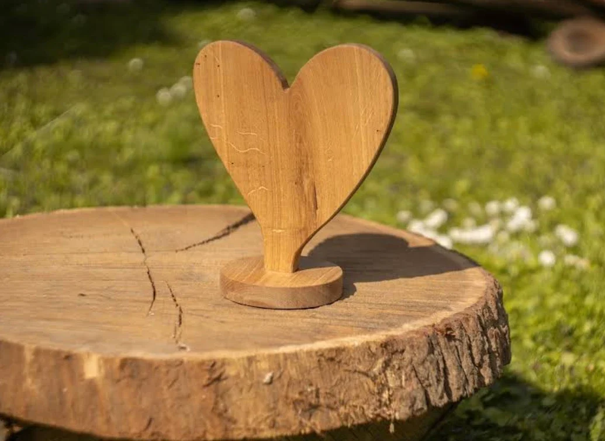
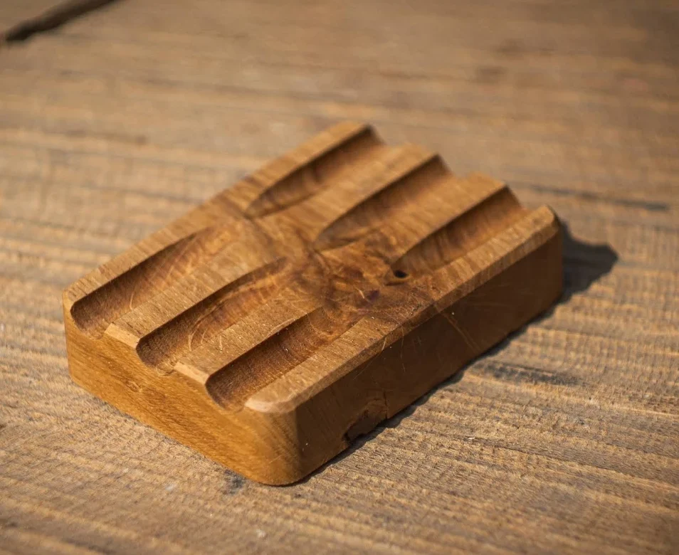
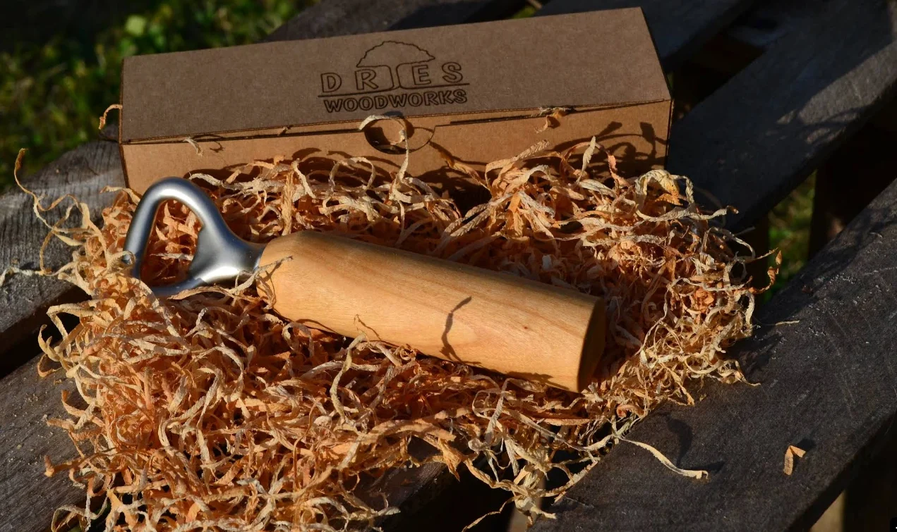
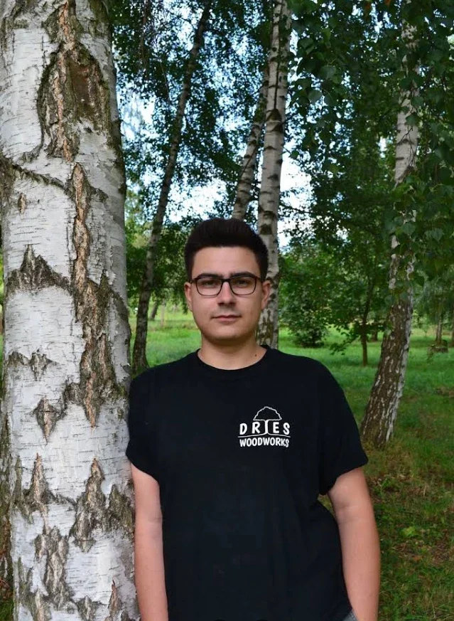

Gedrechselt aus Holz,
das eine Geschichte hat.
Schalen, Bretter und kleine Dinge für jeden Tag. Von Hand gemacht im Odenwald.




Das meiste Holz, das hier verarbeitet wird, hat schon ein Leben hinter sich: alte Balken, gefällte Obstbäume, Reste. Auf der Drechselbank wird daraus etwas, das man wieder jeden Tag in die Hand nimmt. Äste, Risse und Farbspiele im Holz bleiben sichtbar.
„Hier geht Qualität vor Masse.“ aus einer Google-Bewertung

Fertig zum Verschenken
Jedes Stück kommt in einer schlichten Kartonbox, gebettet in Holzwolle. So kann es direkt weitergegeben werden.
Aus einer Hand
Hinter DriesWoodworks steht eine kleine Werkstatt im Odenwald. Holz aussuchen, drechseln, schleifen, ölen, verpacken: Jedes Stück geht durch dieselben Hände.
Wer etwas Bestimmtes sucht, eine Schale in einer bestimmten Größe oder ein besonderes Geschenk, kann gern anfragen.

Die aktuellen Stücke gibt es auf Etsy. Anfertigungen auf Anfrage.
Zum Shop →